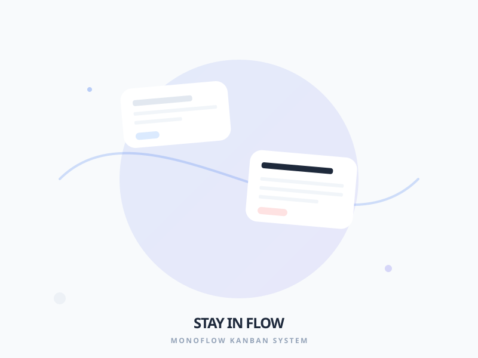

Concept
MonoFlow is a browser-based Kanban tool designed to maximize individual productivity.

Key Features
Privacy First
100% of your data is stored locally in your browser.
Advanced Hierarchy
Intuitive subtask management with Virtual Tickets.
Built-in Analytics
Evaluation of your performance with Metrics and Burndown charts.